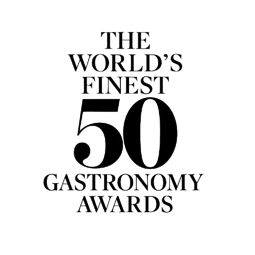
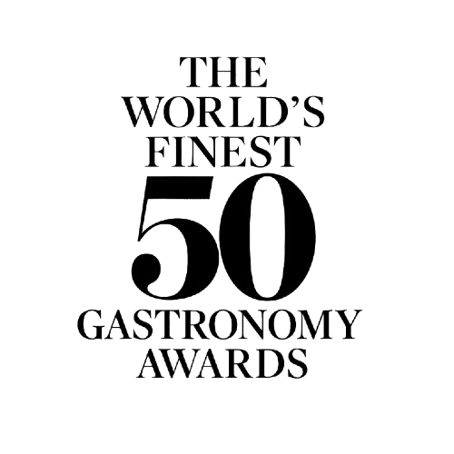

Every Friday and Saturday evening, MOI Fousant transforms into an
intimate salon where our tasting menus are served to the rhythm of
live acoustic music.
From 20:00 onwards, guests are welcomed into a candlelit dining
room, where the tempo of the service follows the flow of the
performance. Courses arrive slowly, giving time to savour each
plate, each glass, and each pause in between.
The experience is designed as a continuous journey: from the first
amuse-bouche to dessert, flavours evolve with the night — subtle
at the beginning, more expressive towards the end — always in
dialogue with the wine pairing and the music.
For gatherings & celebrations
Weekend sessions are ideal for birthdays, anniversaries, corporate
dinners or small private celebrations. You may reserve individual
tables or request a semi-private area for medium-sized groups.
For larger parties, our team can propose a full or partial
restaurant hire, with a tailored tasting menu, extended wine
selection and optional late-night service. Menus can be adapted to
dietary needs when communicated in advance.
Seating is limited and available only on Friday and Saturday
nights. Reservations are required and confirmed according to
availability. For specific requests, please contact us through the
booking form or by phone.


 
